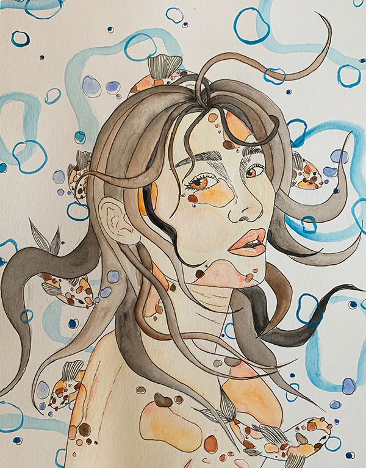

Don't Play Koi
Watercolor and ink on paper, 2020
This piece is a painting from my high school AP Studio Art portfolio. The intent of the portfolio was to portray a surreal connection between humankind and nature using a limited palette of only ink and watercolor on watercolor paper. This piece in particular depicts a young woman surrounded by koi fish and water elements, as if she is part of the underwater scenery.